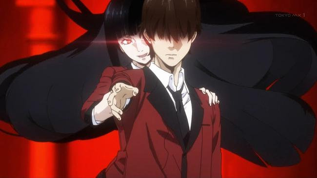

Anime Review: 'Kakegurui'

At Hyakkou Private Academy, the children of the super-rich elite engage in school-sanctioned (and sponsored) games of chance, resulting in a strict social hierarchy among the students. Suzui has fallen to the bottom rung of the social ladder, “house pet”, and due to his lack of funds, he has no way to recoup his financial or social losses. At least, he didn't until the arrival of transfer student Yumeko Jabami changed everything. Yumeko is a high roller with the intuition to back it up, and before long she's sniffing out schemes and cheats all over school. Hyakkou Private Academy may never be the same again.
Do you like to take risks? We're not talking “eat the expired leftovers” type risks, though – more like a “wager $40 million that eating the expired leftovers won't make you sick” situation. If that sounds crazy, you may not want to enroll in Hyakkou Private Academy, the elite high school in Homura Kawamoto and Tōru Naomura's manga series Kakegurui; at this iteration of the crazy manga high school, the entire student hierarchy is based around gambling ludicrous amounts of money on games like “Memory” or “Rock, Paper, Scissors.”

Review:
Even if gambling isn't an interest of yours, Kakegurui's first volume is incredibly readable. The story moves at a good pace and the shifts in Yumeko's character, as well as her still-unknown motives beyond the thrill of gambling, keep you guessing as the story progresses. With imagery that almost belongs in a horror manga and a slightly different take on the hyper-competitive school story, this is a series worth betting on.
Film Stats:
- Title: Kakegurui
- Genre: Mystery, Drama, Psychological
- Production: Square Enix, MAPPA
- Length: 12 episodes
- Release Date: 07/2017